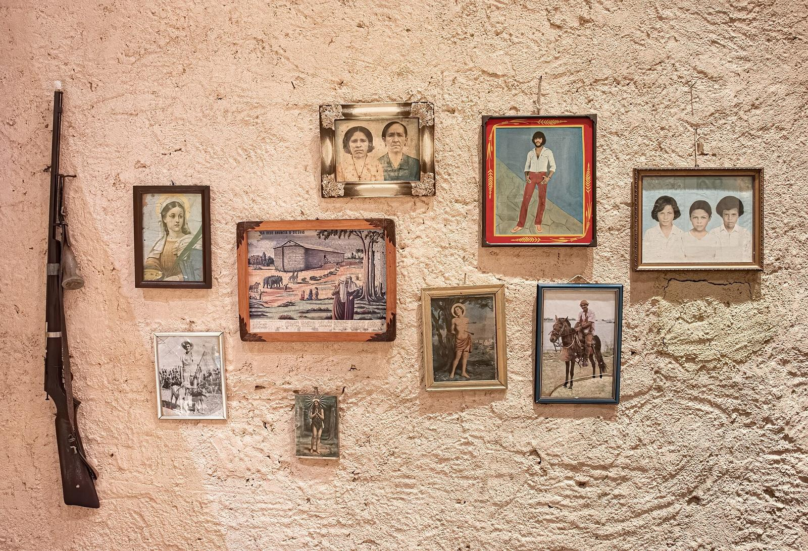

Café Lumen.
- Client
- Lumen & fils
- Année
- {{YEAR}}
- Rôle
- Aménagement, mobilier
- Lieu
- Quartier des Halles

Une salle comme un jardin d'hiver
Le café occupe une ancienne halle de briques. Plutôt que de cloisonner, nous avons suspendu des lampes comme des fleurs et posé des fauteuils en cercle, pour que chaque table ait sa lumière.
Le mobilier est fabriqué à vingt kilomètres, en frêne et en laiton ; les luminaires, soufflés à la main, sont tous différents.


Le résultat
Trois mois de chantier, une salle de quatre-vingts places, et une fréquentation doublée le soir.
Pour raconter un autre projet : copiez cette page, changez les photos, les textes et la fiche, puis faites-la pointer depuis la page des projets.